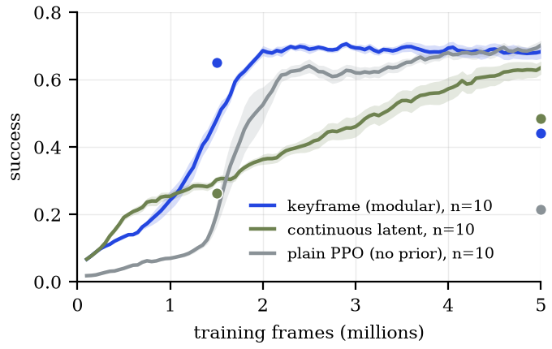
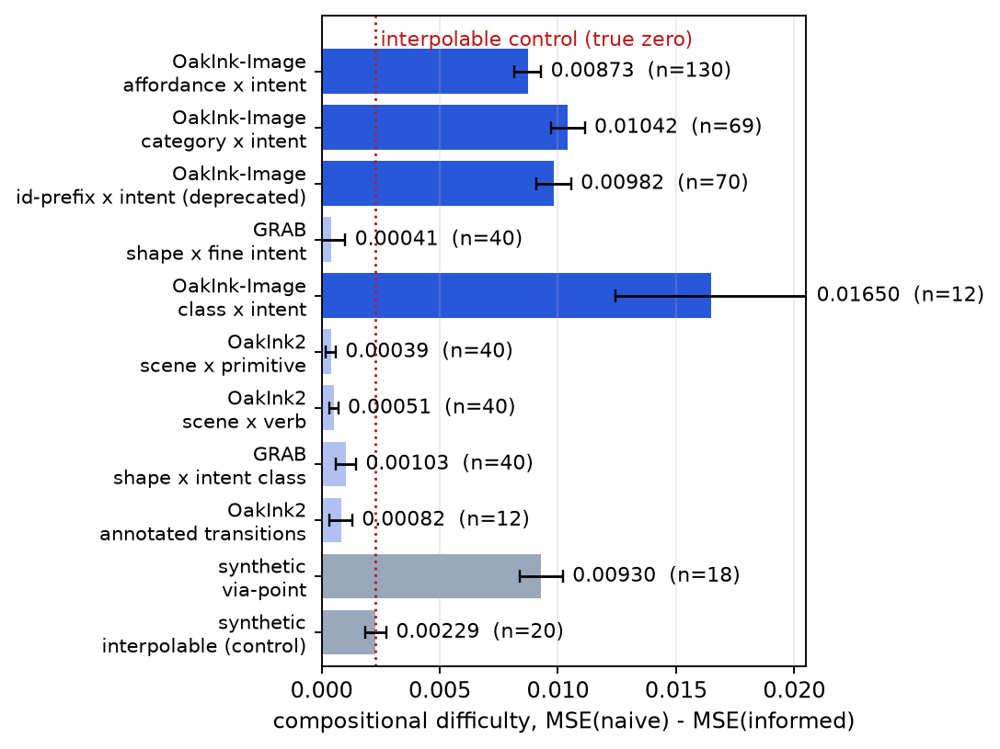

Dexterous manipulation · simulation · pre-registered comparisons · under double-anonymous review
MotionBricks builds motion from reusable parts. We tested both of its layers on simulated dexterous hands, registering the main comparisons before running them. A modular keyframe interface gives an early lead that a non-modular continuous latent closes, and training skills separately does not help. The one gain that survived is choosing the best policy for each stage, and it works on policies trained flat.
Each hand-motion prior became the action space of a PPO policy on a simulated Shadow Hand holding a cube under changing tilts. Policies trained on two-skill sequences and were scored on three-skill sequences they never saw.

The lead also stayed with the cube: on a heavier cube, a sphere and a cylinder it shrank to +0.18, +0.02 and +0.01, and the pre-registered pooled test failed (p = 0.067).
The same target poses joined by straight lines never learned to release, so the learned in-betweener carries the early gain. On Adroit (exploratory, one seed per task), priors did not beat PPO where PPO learned (hammer, pen), and did not unlock tasks it could not (door, relocate).
Adroit relocate, extended into grasp then carry, with the 25 human demonstrations of D4RL and behaviour cloning. PPO from scratch never completed a strict carry. With a stage that counted as done at a single step, a carry skill flung the ball, and the ball then fell within about 18 steps in 98 of 100 episodes, whatever ran next. Every stage now has to hold for 25 steps.
A pre-registered test on fresh seeds, with 20 trainings per side and 400 test episodes never used for any choice. A is the best of 20 flat policies, used for every stage. B uses the same 20 flat policies, the best grasper for the grasp and the best carrier for every carry. C trains 10 grasp skills and 10 carry skills separately and chains the best of each.
Our declared prediction, C above A, failed in the wrong direction (p = 0.12), and so did the prediction that C would match B. Per stage, C lost at the grasp (0.57 against A's 0.77), while its carry after a grasp matched A's (0.20). B won through the carry: its carrier completed 0.34 of carries after a grasp, against A's 0.20. B beat A at two stages (p = 0.002) and nearly quadrupled it at three (p < 10⁻⁵). The benefit belongs to modular deployment, not modular training. B chose from 20 policies per stage and C from 10; a check with matched pools is running.
A chain of modules succeeds with probability ∏ P(module i | end states of module i−1), so every benefit is paid for at the hand-offs. We formulated four conditions during the study and offer them as hypotheses. MotionBricks meets all four in animation; each dexterous layer we tested fails at least one.
| Condition | Motion level | Skill level |
|---|---|---|
| Solution lies inside the modules | partlythe grip needs 83°, OakInk and TACO reach 73–76°; a residual covers the gap | yesskills learned on the task |
| Clean hand-offs | yesposes only | if enforceda one-step stage let carry fling the ball |
| Something to amortise | partlyfaster exploration, one task | yesflat PPO scores 0 |
| A flat learner cannot match it | nocaught up at 5 M frames | noflat policies selected per stage did best |
Testing recombination needs data where recombining is actually hard. We train two priors that differ only in whether they saw a held-out pairing of two labels (say, object category and intent), score both on the same trajectories, and read the difference against a synthetic control whose true value is zero. Over nine axes of three public datasets, difficulty appeared only where the two labels interact in the poses, a statistic computed in minutes. Interaction was not sufficient, every axis with difficulty came from one dataset (OakInk-Image), and the reading against the control was chosen after the declared test against zero.
